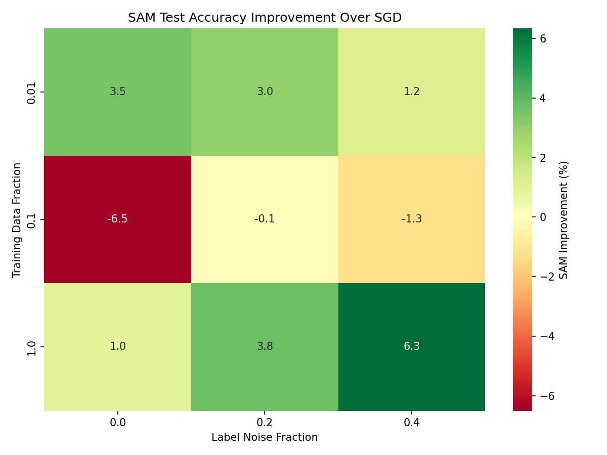
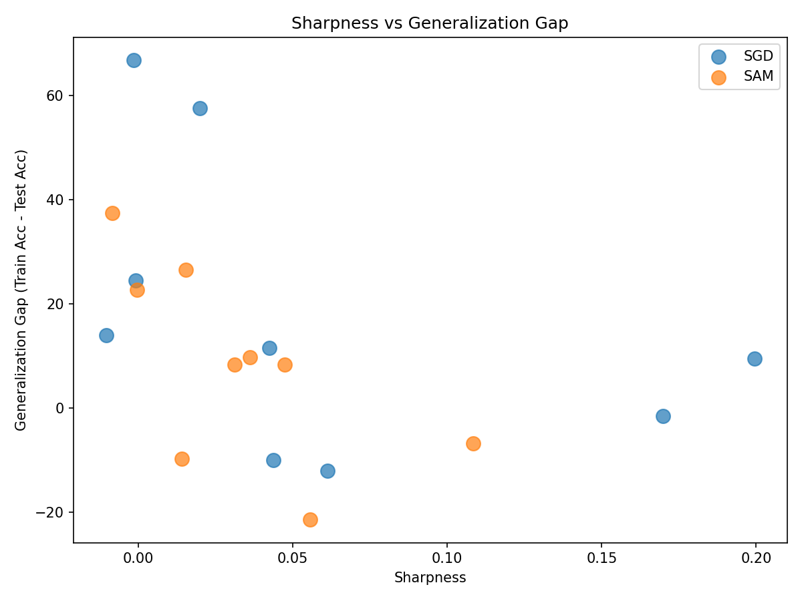

|
When Do Flat Minima Help? A Study of Sharpness-Aware Minimization Across Data Regimes |
|||
| Davis Lee | |||
|
Final project for 6.7960 Deep Learning, MIT December 2025 · GitHub Repository |
Results
Main Finding: Non-Monotonic Benefit. Figure 1 shows our central result: the difference in test accuracy between SAM and SGD across all conditions. The pattern is striking and unexpected. SAM's benefit is not monotonic with dataset size—it helps at the extremes (1% and 100% data) but hurts in the middle (10% data).
Figure 1: SAM improvement over SGD (test accuracy difference in percentage points). Green indicates SAM helps; red indicates SAM hurts. The 10% data regime shows consistent negative effects.
At full data with 40% label noise, SAM provides a substantial 6.34 percentage point improvement (80.90% vs 74.56%), confirming its known strength in noisy settings. But at 10% data with clean labels, SAM causes a 6.51 point drop (55.26% vs 61.77%)—a significant degradation that would matter in practice.
Training Dynamics. Figure 2 reveals how these differences emerge during training. In the small-data regime, both optimizers struggle and neither fits the training data well. In the intermediate regime, SGD fits the training data aggressively while SAM's flatness constraint prevents full fitting—leading to worse test performance despite a smaller generalization gap. At full data, both eventually fit well, but SAM's flatter solution transfers better to the test set.

Figure 2: Training dynamics across data regimes. The 10% data case shows SAM underfitting relative to SGD.
The learning curves reveal a key distinction: at 10% data, SGD reaches 86.2% training accuracy while SAM reaches only 64.9%. SAM isn't just finding a flatter minimum—it's failing to fit the training data. The flatness constraint acts as excessive regularization when data is limited but not trivially small.
Sharpness and Generalization. Figure 3 plots the estimated sharpness against generalization gap for all experiments. While there is a general trend—flatter minima tend to have smaller generalization gaps—the correlation is weak and the relationship is clearly not deterministic.
Figure 3: Sharpness vs. generalization gap. Points are colored by optimizer. The correlation is present but weak, and lower sharpness does not guarantee better test accuracy.
Notably, at 100% data with no noise, SGD has sharpness 0.20 while SAM has 0.05—a 4× reduction—yet their test accuracies differ by less than 1%. This suggests that achieving flat minima is neither necessary nor sufficient for good generalization; what matters is whether the flatness constraint helps or hurts learning in the specific data regime.
Scaling Behavior. Figure 4 shows test accuracy as a function of dataset size, separately for each noise level. The non-monotonic pattern is especially visible in the clean-data case: SAM starts above SGD at 1%, dips well below at 10%, then catches up at 100%.

Figure 4: Test accuracy vs. dataset size for different noise levels. SAM's advantage grows with noise at full data, but the 10% regime consistently shows SAM underperforming.
At high noise levels, SAM's advantage emerges more clearly with scale: the gap between SAM and SGD grows from +1.21% at 1% data to +6.34% at 100% data when 40% of labels are corrupted. This confirms SAM's strength in noisy, data-rich regimes.
The −6.51% drop at 10% data with clean labels is our most surprising finding and suggests caution when applying SAM with limited data.
Training accuracy at convergence:
• 1% data: both ~70-90%
• 10% data: SGD 86%, SAM 65%
• 100% data: both ~97%
Sharpness was estimated by measuring loss increase under random perturbations with ||ε||=0.05·||w||.